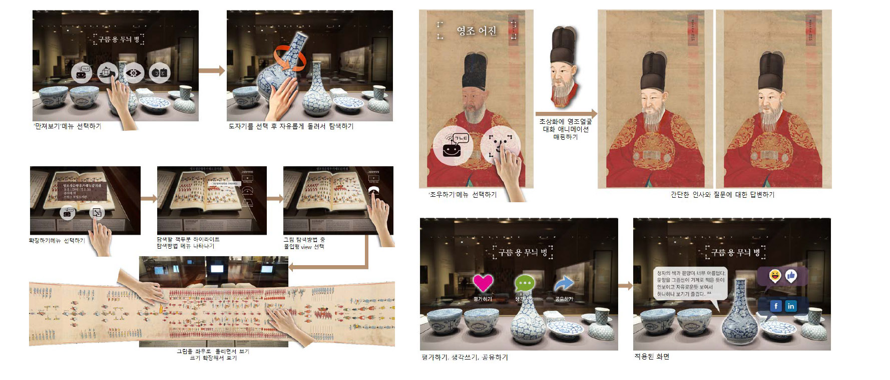

Active R&D Assets
15+
상용 실증 검증 완료 단계
Focus Domains
3
생활 / 전통 / IT 핵심 축
Primary Technologies
XR / AI
지능형 하이브리드 공간 구성
System Code
#4923
GIST 문화기술연구실 연계
기술교류 파이프라인 진행 상태
Updated May 2026상담 및 적용 가능
AR 도슨트 UX
Asset 01
수어·문자 자동 변환
Asset 02
실감 가상 문화유산
Asset 03
현장 실증 및 고도화
스마트 미디어월 플랫폼
Asset 04
XR 트윈 공간 저작도구
Asset 05
공연 실시간 반응 분석
Asset 06
지원 파트너십 형태
신속 PoC 현장 구축
POC
정부/민간 공동 R&D
COLLAB
연구소 원천기술 이전
TRANSFER
현장 공간별 기술 적용 분야 매트릭스
| 핵심 보유 기술명 | 전시 공간 | 공연 예술 | 문화유산 | 접근성 |
|---|---|---|---|---|
| AR 도슨트·전시 UX | HIGH | MID | HIGH | MID |
| XR 트윈 및 시뮬레이터 | HIGH | LOW | HIGH | MID |
| 수어·문자 자동 변환 | HIGH | MID | MID | HIGH |
| 생체 반응 및 감성분석 | MID | HIGH | LOW | LOW |
R&D System Architecture
관람자 다중 경로 인지, 큐레이터 실시간 저작도구, 다차원 공간 센싱 파이프라인을 입체적으로 연결한 KCTI 핵심 기술 결합 모델

기술 수요 신청 및 파트너십 요청
관심 기술 번호(Asset ID), 적용하고자 하는 공간 사양, 대략적인 실증 희망 일정을 포함하여 공식 문의를 보내주시면, 매칭 부서에서 검토 결과를 신속히 발송합니다.
Official Desk Direct Line
xenonluv@gist.ac.kr